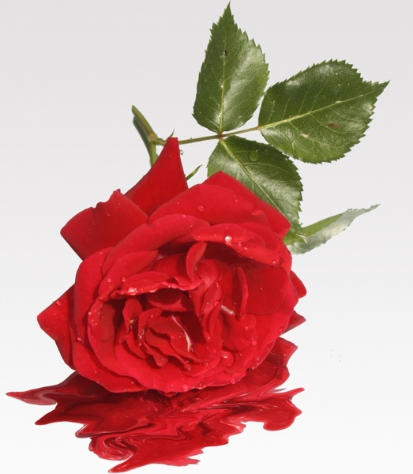
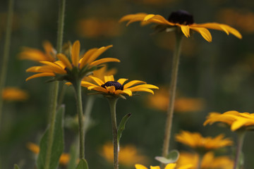

ROSE

Roses are multi-petal flowers available in an array of colours.
Some varieties are known for their prickles along the stems of the plant,
which are used to deter predators. Many species are now cultivated although there are still varieties that grow in the wild.
Roses are native to China but are now grown across
the world and thrive in sunny, well-drained soil. They particularly like clay soils and it is best
to grow roses away from other plants
so their roots are not disturbed. It is important to remember that hybridized flowers such as roses have become more adaptable to different conditions so check when buying your roses what the optimum conditions are.
LOTUS
Lotus is the national flower of both India and Vietnam. Interestingly, it is the Lotus pink flowers that are a
national symbol. The flower is native to Asia, predominantly to the regions of India and China. A Lotus flower grows 49 inches in height and can spread 10 feet horizontally. From the stems to the rhizomes, most parts of the flower are edible.
Lotus flower also has applications in the medicinal industry. It has been used for
treating muscle spasms and pains.
The flower petals open in the morning and close at night.
The petals of the Lotus have air-pockets to retain buoyancy on the water bodies. Lotus is a sacred Buddhist flower.
SUN FLOWER

The common sunflower is valuable from an economic as well as from an ornamental point of view.
The leaves are used as fodder, the flowers yield a yellow dye, and the seeds contain oil and are used for food.
The sweet yellow oil obtained by compression of the seeds is considered equal to olive or almond oil for table use.
Sunflower oil cake is used for stock and poultry feeding. The oil is also used in soap and paints and as a lubricant.
The seeds may be eaten dried, roasted, or ground into nut butter and are common in birdseed mixes.